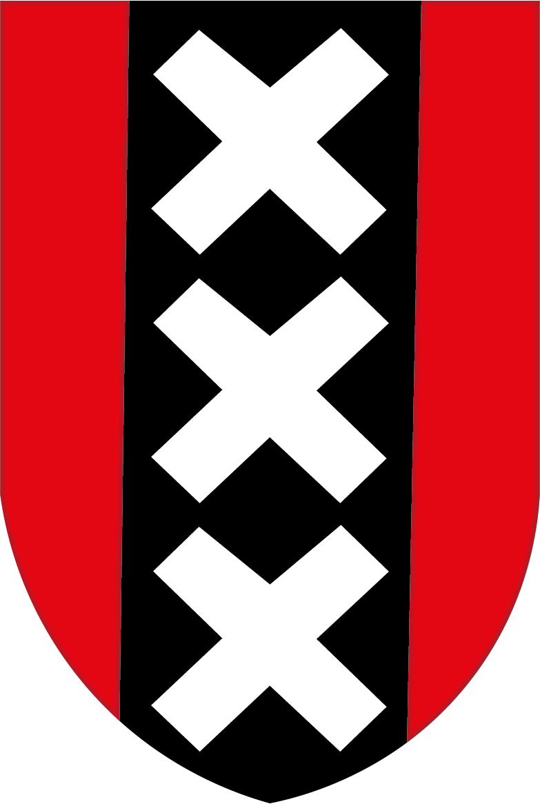

Algemene informatie
De Kloveniersburgwal is een gracht in het centrum van Amsterdam, in het oosten van de Dam. Het ligt tussen de Amstel en de Nieuwmarkt. Op de burgwal staan veel typisch Amsterdamse grachtpanden en eromheen varen veel boten op de gracht. In de straat zelf staan een aantal gebouwen waar belangrijke instellingen in gevestigd zitten of zaten. Een paar hiervan zijn de Doelenzaal, waar tot 2016 het Internationaal Danstheater zat, het Trippenhuis, waar de Koninklijke Nederlandse Akademie van Wetenschappen zit, en een ingang van de Oudemanshuispoort, een locatie van de Universiteit van Amsterdam.

Geschiedenis
Het werd rond eind vijftiende eeuw gegraven, vlakbij werd ook een stadsmuur met drie torens gebouwd. De eerste jaren diende de Kloveniersburgwal dus vooral als verdedigingswerk. Later werd dit allemaal afgebroken en in plaats hiervan huizen gebouwd. Ook kwam er een zogenaamd Dolhuis, iets wat we nu een psychiatrische instelling zouden noemen. Tijdens de Tweede Wereldoorlog was de Kloveniersburgwal een grens van de Joodse wijk.
De naam
De naam is afkomstig van een functie binnen de schutterijen, een klovenier. Deze mannen gebruikte een bepaald vuurwapen, waarvan de naam oorspronkelijk Frans is, een couleuvrine. Deze kloveniers werden ook vastgelegd in een groepsportret, nu een van de bekendste schilderijen van Nederland: de Nachtwacht.